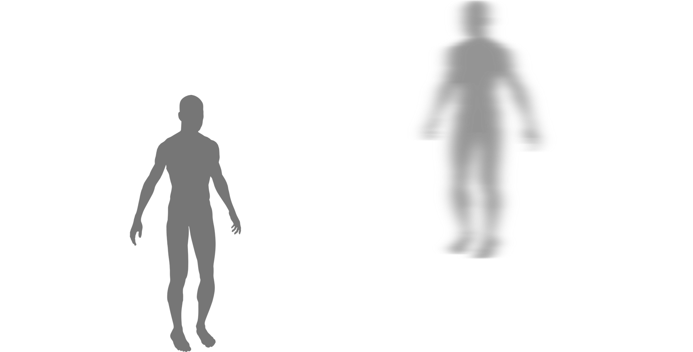
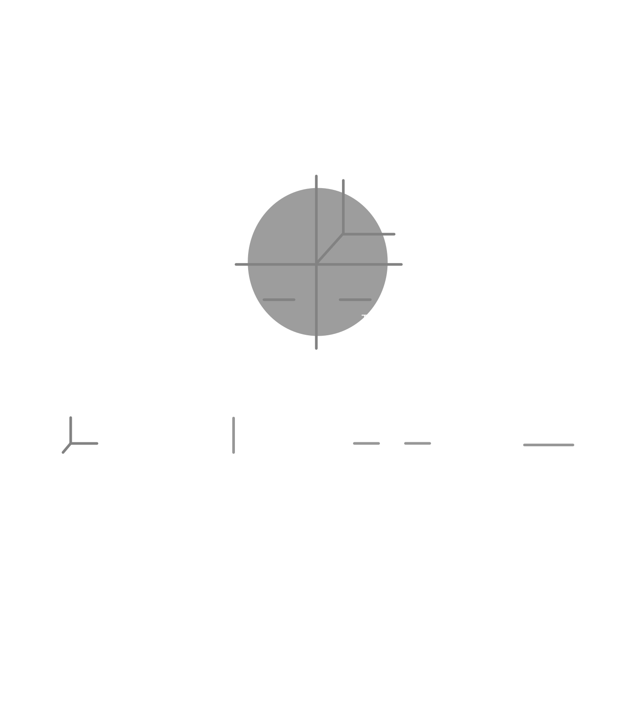
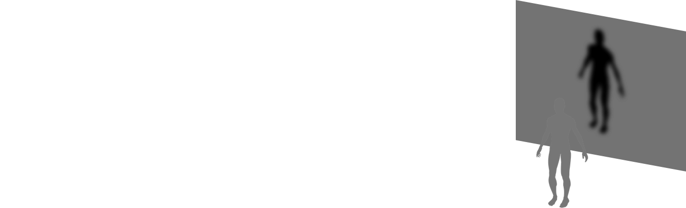
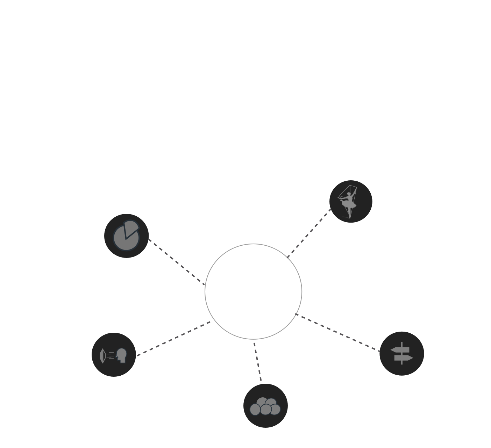

Summary



ROLE

Laban's Movement Theory


Behind The Curtains


Next Steps
![Currently, we are working on adopting the ’Time’ parameter of Laban’s Efforts into the system. This is done by capturing joint velocity and acceleration, and using these to identify sudden and sustained movements. The next steps involve adoption of ‘Space’ and ‘Weight’ qualities of Effort using multi-modal input like Motion Capture suit, Kinect, EMG Band, Accelerometer etc. We will also plan on exploring spacial qualities of dance and movement using the icosahedron-based kinesphere concept of shape and space exploration.](img/Luminai/l9.png)